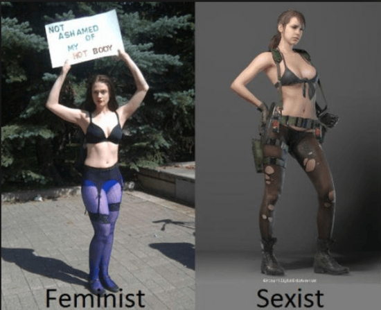

The appeal of older men to younger women beyond the strictly “gold digger” transactional urban legend is fully embodied in one phrase: “The Most Interesting Man in the World.” Dos Equis and ad agency Havas Worldwide created one of the most successful campaigns in modern history based on the premises outlined in my first article:
The evolutionary explanation for this is straightforward enough: throughout history, most men did not live past 35. Those who lived longer maintaining vitality, strength, leadership and success had to be genetically exceptional and fertile women cue to this. I will now outline the most common types of American women who prefer older men and the pros and cons of each.
1. High IQ/Creatives
Where genius IQs are concerned, men outnumber women by as much as 7:1. As men typically take longer to mature, these women will almost always go for older, successful men as they find the company of frat boys to be insufferable. Should you find a young woman like this who is attractive and agreeable, you should snap her up quick regardless of geography or obstacles.
Pros: Highest caliber company and potential marriage material. They are able to appreciate your finer qualities, since they also possess said qualities themselves.
Cons: Difficult to argue with, difficult to game so skip the PUA and be genuine.
Where: Academics, artistry, okcupid, sugar daddy sites.
2. Accountants
The best “lady in public/whore in bed” closet sex freak you will ever meet.
Pros: Potential marriage material
Cons: Her long work hours can limit your fun time.
Where: Corporate bars, networking events, okcupid , match, eharmony.
3. Cosplay Models
Many have what I call “Prince syndrome“—extravagantly sexual on “stage,” but quite shy and socially awkward elsewhere. The best of them can make excellent girlfriends, as they tend to pair bond well and their shyness limits promiscuity.
Pros: Hot, sexy, kinky or at the very least trainable.
Cons: Eccentric. Unless you’re a true alpha male, penetrating the bitch shield often involves cosplaying with her and hanging out with her nerdy beta friends, the most intolerable form of clown game.
Where: Cosplay conventions, online dating, video gamer bars.
4. Gamer Girls
Video gamers share many of the traits of cosplayers and there is great overlap. They can be quite smart and very agreeable.
Pros: Same as cosplayers.
Cons: Shyness can limit social interactions.
Where: Video gaming events, twitch.
5. Strippers
As mentioned in my stripper article, it goes without saying that these wild women are mainly looking for any man who can deal with their job and lifestyle, age being far down the list of priorities. If you can score one who works in an upscale club who is a newbie college student, these can make for great short term flings.
Pros: Hot, kinky, exhibitionist, makes her own money, flexible schedule for fun and travel.
Cons: In lowbrow clubs, she’s probably a skank ho. For upscale, it’s only a matter of time before someone richer or slicker intrigues her, so eject out of this sexual jet fighter before it crashes in 9 1/2 weeks. Feminists have infiltrated this once fine profession so caveat emptor.
Where: Strip clubs, hip hop and EDM clubs, sugar daddy sites.
6. Porn Stars
They do older men on camera for a living so they’ll have no problem doing you.
Pros: Total sex professional, STD tested.
Cons: Other than a pump n dump, they are generally only suitable for swingers, drug dealers or cucks. Most are notorious gold diggers with an “us vs. them” gypsy/grifter mentality. Life expectancy: 9 1/2 hours.
Where: San Fernando Valley, CA, Miami, Vegas, Craigslist.
7. Cam Girls
She aims to please and loves older men. One of my favorite types as newbies can be very loyal and pair bond quite well. Life expectancy: 9 1/2 months
Pros: All of the benefits with few if any of the problems that come with other jobs in the adult biz.
Cons: Too many orgasms when “logged on” can physically desensitize her so bang her on “off” days.
Where: Online dating.
8. Fitness Models
Her top priority is how fit you are and whether you look good with her in photo ops. All other traits secondary or irrelevant, including age.
Pros: You’ll be the envy of all your friends, even if the sex is boring, which it often is.
Cons: You’ll pump iron and count calories all day to keep her, so make sure you enjoy it.
Where: Gyms, nightclubs, fitness and bikini competitions.
9. Club sluts
The name of the game here is drugs, alcohol, your circle of friends, and an unusually high tolerance for her never-ending narcissism. If you continually appeal to her vanity with regular doses of “narcissistic supply,” your age is irrelevant.
Pros: Physically attractive, cocaine, and molly instantly converts her into a sexual acrobat.
Cons: Wrap your man schlong with triple jimmy hats, as a steady diet of drugs, and semi-unconscious sex all but ensures she is packing STDs.
Where: EDM and Hip Hop clubs.
10. Tattoo Models
The traits most associated with excessive tattoos are lack of self control and Axis 2 personality disorders. As her life is generally a cascading waterfall of impulsively bad choices, banging someone old enough to be her daddy is the least of her problems.
Pros: Easy to game, DTF, freaky. Pretend to love her freakish tatts and you’re in like Flynn.
Cons: Almost all her friends are degenerates. Any antisocial personality who randomly inks herself has a lowbrow self destructive streak that eventually spills over into your life. Regular hiding of change jars and silverware is recommended.
Where: Tattoo parlors and wherever fine skanks are sold.
11. Sugar Babies

The best sex you will ever have. They love older men and love to please when you “unlock” them with a provider frame. A great alternative to dating hot bar trash.
Pros: If you know what you’re doing and short circuit this pay to play nonsense, you will enjoy the spoils of victory.
Cons: A harder script to flip than it used to be and you will get obliterated if you don’t know how to screen bad apples and leverage world class, bullet proof game. Seekingarrangement*com founder Brandon Wade has a twisted view of dating and secretly bought many of the other sites forcing you to use SA—the weirdest and most brazenly transactional of all. For pro men only.
Where: Nightclubs, EDM festivals, sugar daddy sites.
12. Littles
The “Daddy Dom/Little Girl” (DD/LG) relationship is gaining popularity. Many of these women are adorable, amazing submissives who relish the role.
Pros: Great, agreeable company, amazing sex.
Cons: You’ll have to deal with a six year old mind in a 22 year old sexpot’s body some of the time so make sure you have the temperament for this.
Where: Online dating.
13. Fetish Models/BDSM Power Exchange
Simply put, very few younger men know how to do this properly including those in this scene. So fetish subs almost always quietly seek out older men.
Pros: Hot, young, kinky.
Cons: Degenerate friends and culture, problems with intimacy.
Where: Fetish conventions, fetlife , sex clubs and swingers clubs.
14. 420 friendlies

There’s something about weed and women who prefer older men that just seems to go together. Don’t try to analyze it, just have a blast.
Pros: DTF, super chill.
Cons: Slacker personality.
Where: Fire it up and they will come..
15. Rocker Chicks
Her top priority is common musical interests and to some degree, how well you play.
Pros: Low maintenance, easy to please. One of the few types who actually care about your art.
Cons: If alcoholism, smoking or tattoos, a poor choice for LTR.
Where: Rock clubs, concerts, festivals.
16. Adrenaline Junkies
If you can keep up with her death defying adventures and bring it in the bedroom, age rarely matters.
Pros: Fit and freaky
Cons: Her life endangering addiction always comes first and though much younger, she’ll be dead or crippled before you are.
Where: Big wave beaches, ski slopes, rock climbs, skydives, skateboard events.
17. SJWs

According to Freudian reaction formation, many are infatuated with the alpha male forbidden fruit. Robert Greene and 50 cent wrote a book and discussed turning disadvantages into strengths. To wit, her obsession with Marxist “loser” philosophy means that she is the easiest of all women to influence. Indoctrination and self created low socioeconomic status further predisposes her to slutiness. Often, they are peeking through the “alpha male” door on SD sites, while naively seeking to destroy the “white patriarchy.”
Pros: DTF, will do almost any sex act for spot cash that she delusionally believes to be “wealth transfer” to further the feminist cause. Enjoy the goods, then conveniently forget to pay her.
Cons: Requires formidable acting skills and the patience of Job in the Bible to pander to her unbearable ideology, warped perceptions, and argumentative badgering. A simple disagreement about the best brand of coffee will get you accused of “gas lighting” so the less talk the better. Any money saved gaming on the cheap will be spent on the memory cards you must buy to record everything as a preventative false accusation defense.
Where: Marxist training camps (i.e. colleges), hipster districts, faux protests, sugar daddy sites.
18. Single Moms
They are nicer because they have to be. The best ones tend to be early 20s who wisely dumped their loser deadbeat “Romeo” quick and early. If a good woman and a good mother, it’s worth the cost of a babysitter to enjoy hot, steamy sex.
Pros: Agreeable, hot, kinky.
Cons: Her child always comes first and if you stay, you’ll never be “Dad.”
Where: Online dating, eharmony, facebook.
19. Women in other countries

Much has been written at ROK on this topic so it is included only for completeness.
Pros: Nicer, cheaper, less self entitled, age irrelevant.
Cons: Hypergamy and hustles still abound. Mastering the language, cultural barriers and cost of travel negates any savings.
Where: Thailand, Japan, Phillippines, Costa Rica, Columbia, Brazil, Ukraine, Ireland, Dominican Republic, country specific cupid sites, SD sites, Tinder.
Conclusion
Often there is great overlap between these archetypes. The appeal (or revulsion) of each will depend on where you are in life and the type of relationship you are seeking. The commonality among all nineteen is some sort of natural rebellious tendency and a general problem with authority. No one is going to tell her what to do (at least not until you put the handcuffs on her!) and that includes dating older men with an age gap that American society publicly shuns, except for the rich and celebrities who get a “pass.” This shows that it isn’t really age at all but very often societal envy of your superior genetics that is actually at work.
Read More: How To Meet Women Through Sugar Daddy Dating Sites